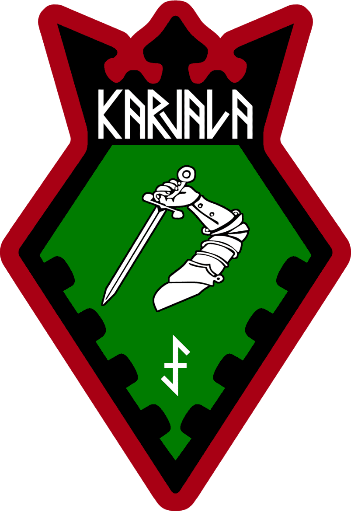
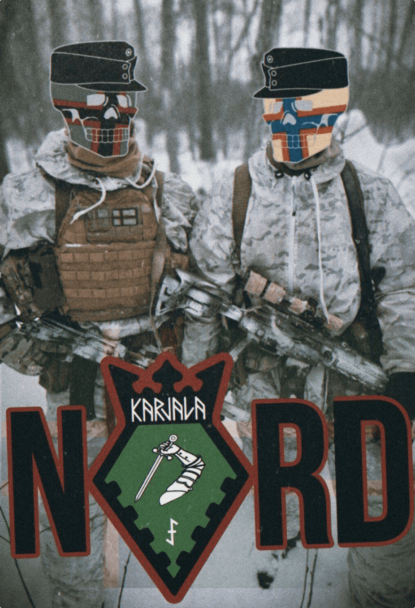

Комплектование NORD производится на добровольческой основе. В подразделение принимаются Народы Карелии (карелы, вепсы, саамы, поморы, кольские норвежцы, инкери, финны), потомки репрессированных, финно-угры и скандинавы из братских регионов (эрзя, эстонцы, ижора, шведы, коми, мокша и другие), а также те кто видит своё будущее в Североевропейской системе ценностей.
Облик герба NORD был вдохновлён символами прошлых поколений и борцов за Северный образ жизни. Композиция в целом является данью общеевропейскому визуальному стилю, богатому, но не перегруженному, строгому, но изящному.
Корона, как геральдический элемент, выражает иерархичность внутри движения и уважение его членов к Традиции и борьбе предшественников. Малая погоня (лата, замахивающаяся мечом) – элемент исконного герба Карелии, напоминающая об извечной борьбе против натиска с Востока. Зубцы крепостной стены по нижним внутренним граням – так же традиционный геральдический элемент нашего региона, демонстрирует нерушимую стойкость Северян в защите своего родного края.

Dubbelkroken в основании – древний и сложный символ, несущий последовательность смыслов: произрастая из руны Ihwa (ᛇ) старшего футарка, скрывающей под собой метафорическое изображение Yggdrasill, как олицетворения мирового порядка, он со временем стал защитным символом, наносившимся резцом на окраинах владений для защиты своей земли и собственности. Во время крестьянских войн против тирании, этот знак использовался как символ народной и партизанской борьбы. Являясь распространённым Североевропейским геральдическим элементом, находящемся на гербах многих славных семей и городов, он появляется так же и на шевроне бойцов NORD, как и в старые времена, будучи выведенным на знамёнах борцов против тирании.

«Карелизация» (Karjalaistuminen) является геостратегическим проектом с целью обеспечения безопасности в Северной Европе. Мы пропагандируем создание новой буферной зоны, которая обеспечила бы Балтийским странам и Скандинавии безопасность. Для Балтийских стран и Северной Европы Карелия станет щитом от Востока в регионе Балтийского, Баренцева морей и Арктики.
Наша цель – создать независимую Карелию, простирающуюся от Карельского перешейка до Кольского полуострова. В более широком ареале распространения Карельского народа, в таких областях как Новгородская, Тверская, Ингерманландия и т.д. и добиваться предоставления Карелам этнокультурной автономии, помощm Ингерманландии и Поморью в обретении независимости. Наша коалиция сопротивления – разнообразное и децентрализованное движение. Храбрую повстанческую борьбу на территориях Севера и других братских республик ведут наши соратники из автономного движения «Pohjoinen Veljeskunta», выросшего из неравнодушных к своей земле коренных жителей и сочувствующих им.
Идеологической основой NORD является Идея консервативного парламентаризма, основанного на принципах меритократии и правового конституционализма. NORD придерживается концепции меритократической республики, где власть принадлежит наиболее компетентным и заслуживающим этого людям, а принятие решений основано на знаниях и опыте.